library("here")here() starts at /home/people/s204543/projects/group_29_projectAll project quarto files are rendered and stored as HTML files in “results”.
“00_all.html” contains all rendered quarto files in one HTML file and is located in “results” folder.
library("here")here() starts at /home/people/s204543/projects/group_29_project#|output: false
quarto::quarto_render(here("R/01_load.qmd"))[31m
processing file: 01_load.qmd
[39m1/7
2/7 [unnamed-chunk-1]
3/7
4/7 [unnamed-chunk-2]
5/7
6/7 [unnamed-chunk-3]
7/7
[31moutput file: 01_load.knit.md
[39m[1mpandoc [22m
to: html
output-file: 01_load.html
standalone: true
section-divs: true
html-math-method: mathjax
wrap: none
default-image-extension: png
[1mmetadata[22m
document-css: false
link-citations: true
date-format: long
lang: en
title: 01_load
author: 'Group 29: Helena Møller, Emma Christensen, Frederik Holmstrup, Casper Harreby & Laura Christiansen'
Output created: 01_load.htmlThe data used for this project is the data used for the article “The International Stroke Trial (IST): a randomised trial of aspirin, subcutaneous heparin, both, or neither among 19435 patient with acute ischaemic stroke” by the International Stroke Trial Collaborative Group. The purpose of this project is to improve some of the figures from the article as well as trying to get further insights. The purpose of the study and our project is to access the efficacy and safety of antithrombic therapy for treatment of acute ischemic strokes. Two different doses of heparin is tested together with and without a dose of aspirin. That creates 6 groups of patients, where one of them is the control group with no treatment.
library("tidyverse")
library("here")The data webpage link are used for a direct load of the data to ensure reproducability
#The data is loaded directly from the webpage
raw_data <- read_csv(file = "https://datashare.ed.ac.uk/bitstream/handle/10283/124/IST_corrected.csv?sequence=5&isAllowed=y")The data is saved in a data/_raw folder on your local directory. The .gitignore is modified to include the entire data folder.
# Define the file path using the here terminology
file_path <- here("data/_raw/")
#Checking if the folder path already exists in your local directory
if (!file.exists(file_path)){dir.create(file_path, recursive = TRUE)}
#Write the data to a TSV file
write_tsv(x = raw_data,
file = str_c(file_path, "01_dat_load.tsv"))file.rename(here("R/01_load.html"),here("results/01_load.html"))[1] TRUE#|output: false
quarto::quarto_render(here("R/02_clean.qmd"))[31m
processing file: 02_clean.qmd
[39m1/43
2/43 [unnamed-chunk-1]
3/43
4/43 [unnamed-chunk-2]
5/43
6/43 [unnamed-chunk-3]
7/43
8/43 [unnamed-chunk-4]
9/43
10/43 [unnamed-chunk-5]
11/43
12/43 [unnamed-chunk-6]
13/43
14/43 [unnamed-chunk-7]
15/43
16/43 [unnamed-chunk-8]
17/43
18/43 [unnamed-chunk-9]
19/43
20/43 [unnamed-chunk-10]
21/43
22/43 [unnamed-chunk-11]
23/43
24/43 [unnamed-chunk-12]
25/43
26/43 [unnamed-chunk-13]
27/43
28/43 [unnamed-chunk-14]
29/43
30/43 [unnamed-chunk-15]
31/43
32/43 [unnamed-chunk-16]
33/43
34/43 [unnamed-chunk-17]
35/43
36/43 [unnamed-chunk-18]
37/43
38/43 [unnamed-chunk-19]
39/43
40/43 [unnamed-chunk-20]
41/43
42/43 [unnamed-chunk-21]
43/43
[31moutput file: 02_clean.knit.md
[39m[1mpandoc [22m
to: html
output-file: 02_clean.html
standalone: true
section-divs: true
html-math-method: mathjax
wrap: none
default-image-extension: png
[1mmetadata[22m
document-css: false
link-citations: true
date-format: long
lang: en
title: 02_clean
author: 'Group 29: Helena Møller, Emma Christensen, Frederik Holmstrup, Casper Harreby & Laura Christiansen'
Output created: 02_clean.htmllibrary("tidyverse")
library("knitr")
library("quarto")
library("here")data <- read_tsv(here("data/_raw/01_dat_load.tsv"))Rows: 19435 Columns: 112
── Column specification ────────────────────────────────────────────────────────
Delimiter: "\t"
chr (63): RCONSC, SEX, RSLEEP, RATRIAL, RCT, RVISINF, RHEP24, RASP3, RDEF1, ...
dbl (49): HOSPNUM, RDELAY, AGE, RSBP, HOURLOCAL, MINLOCAL, DAYLOCAL, ONDRUG,...
ℹ Use `spec()` to retrieve the full column specification for this data.
ℹ Specify the column types or set `show_col_types = FALSE` to quiet this message.During revision of the data, many faulty characters of “U” and “C” appear within columns, only meant for “Y” or “N”. The “U” and “C” are therefore changed to NA to indicate a missing value.
#converting U and C to NA
data_clean_properNA <- data |>
#Replacing all C with NA to indicate missing value
mutate(across(where(is.character), ~ na_if(.,"C"))) |>
#Replace all U and u with NA in all columns except for RCONSC, where U = unconscious
mutate(RCONSC = if_else(RCONSC == "U", "unconscious", RCONSC)) |>
mutate(across(where(is.character), ~na_if(.,"U")),
across(where(is.character), ~na_if(.,"u"))) |>
mutate(RCONSC = if_else(RCONSC == "unconscious", "U", RCONSC))In the variable SET14D, a 0 is indicating that it is not known if the subject is alive or dead at the 14 day checkup. We therefore want to change the 0 to NA, indicating that this information is not known.
#converting 0 to NA
data_clean_properNA2 <- data_clean_properNA |>
mutate(SET14D = if_else(SET14D == 0, NA, SET14D))In column DASP14 and FAP, both “n” and “N” along with “y” and “Y” both indicating “No” and “Yes” respectively. To match the general syntax, all letters are made upper case.
#making y and n upper case
data_clean_propervar <- data_clean_properNA2 |>
mutate(across(c(DASP14,FAP), ~str_to_upper(.)))In the columns DVT14, H14, DDEAD, HTI14, ID14, ISC14, NCB14, NK14, PE14, TRAN14, values are 0 = no and 1 = yes, and to match the other binary variables they will therefore be transformed to N = no and Y = yes.
#converting 0 to N(no) and 1 to Y(yes)
data_clean_propervar2 <- data_clean_propervar |>
mutate(across(c(DVT14,H14,DDEAD,HTI14,ID14,ISC14,NCB14,NK14,PE14,TRAN14,STRK14),
~case_when(
. == 0 ~ "N",
. == 1 ~ "Y")))The numbers 1-8 is used for naming cause of death. Therefore OCCODE is renamed to the actual meanings of the numbers 0-9 to prevent confusion to number code in cause of death.
#changing values 0-9 for occode to their actual meaning
data_clean_properOCcode <- data_clean_propervar2 |>
mutate(OCCODE = case_when(
OCCODE %in% c(0,8,9) ~ NA,
OCCODE == 1 ~ "dead",
OCCODE == 2 ~ "dependent",
OCCODE == 3 ~ "not recovered",
OCCODE == 4 ~ "recovered"))In the two columns minlocal and hourlocal the local time of the randomization study initiation is annotated. This value is not allowed to be higher than 59 min and 23 hours. All values above this is set to NA for missing values.
#replacing all values above 59 in minute and 23 hour with NA
data_clean_truetime <- data_clean_properOCcode |>
mutate(MINLOCAL = if_else(MINLOCAL > 59, NA, MINLOCAL),
HOURLOCAL = if_else(HOURLOCAL > 23, NA, HOURLOCAL))For the pilot study, medium dose of heparin is annotated as high dose. The high dose annotation is changed to medium dose annotation, and the two columns for medium dose of pilot study and following study is merged.
#replacing all H for M for indicating medium dose (Heparin)
data_clean_noH <- data_clean_truetime |>
mutate(RXHEP = if_else(RXHEP == "H","M",RXHEP))
#merging the Hep high and hep medium column, changing unknown to NA
data_clean_correctHepDose <- data_clean_noH |>
mutate(across(c(DMH14,DHH14), ~replace_na(.,""))) |>
unite(DMH14, c(DMH14,DHH14), sep = "") |>
mutate(DMH14 = na_if(DMH14,"")) |>
mutate(across(c(DMH14,DLH14), ~na_if(., "U")))The variable STRK14 is annotated as STR14 in the data description, and the column is therefore renamed accordingly
#converting name of variable STRK14 to align with the variable description
data_clean_annotationalign <- data_clean_correctHepDose |>
rename("STR14" = STRK14)In the RDATE variable, all times are annotated as polish months and year. We aim to convert this information in two columns, and reencode the polish to english months
#converting polish month names to english month names
data_clean_english <- data_clean_annotationalign |>
separate_wider_delim(RDATE,delim = "-", names = c("RMONTH","RYEAR")) |>
mutate(RMONTH = case_when(
RMONTH == "sty" ~ "Jan",
RMONTH == "lut" ~ "Feb",
RMONTH == "mar" ~ "Mar",
RMONTH == "kwi" ~ "Apr",
RMONTH == "maj" ~ "May",
RMONTH == "cze" ~ "Jun",
RMONTH == "lip" ~ "Jul",
RMONTH == "sie" ~ "Aug",
RMONTH == "wrz" ~ "Sep",
RMONTH == "pa\x9f" ~ "Oct",
RMONTH == "lis" ~ "Nov",
RMONTH == "gru" ~ "Dec"))Some columns is already known to not be relevant. These will therefore be removed to reduce the space of the column.
#removing of irrelevant columns
data_clean_removecol <- data_clean_english |>
#Removing comment columns
select(-c(DMAJNCHX,DNOSTRKX,DSIDEX,DDEADX,FDEADX)) |>
#Removing columns which are not interesting for our studies
select(-c(HOSPNUM,CNTRYNUM,SET14D,NCCODE)) |>
#Removing column which have unknown meaning as not included in variable descriptions
select(-c(DIED))The columns DDEADD and FDEADD are the same, as the value is the date of death of the subject, which is independent of when the checkup is done. The columns are therefore renamed to DEADD (deathdate) and one of the columns are removed.
#removing ambigious columns
data_clean_mergecol <- data_clean_removecol |>
rename("DEADD" = DDEADD) |>
select(-FDEADD)There are four different columns in the data which all represents the final diagnosis of the initial event. It is fair to assume that if one final diagnosis is made of an initial event then another diagnosis is not made, as there are no data entries which has “Y” in more than one of the diagnosis. One column, DDIAG, is therefore made to represent the final diagnosis of the initial event.
#mergin 4 columns into a new (DDIAG)
data_clean_mergecol2 <- data_clean_mergecol |>
mutate("DDIAG" = case_when(
DDIAGISC == "Y" ~ "DDIAGISC",
DDIAGHA == "Y" ~ "DDIAGHA",
DDIAGUN == "Y" ~ "DDIAGUN",
DNOSTRK == "Y" ~ "DNOSTRK",
TRUE ~ NA))The causes of death at 6 months are split into 8 different columns called DEAD1-8. To have more tidy data, all columns are merged together into one column, using the same 1-8 code for cause of death as DDEADC and FDEADC columns. The new column is called DEADC (death cause)
#creating of one column DEADC, which contains all causes of death as 1-8
data_clean_properDEADcode <- data_clean_mergecol2 |>
mutate(DEAD1 = if_else(DEAD1 == 1, "1", ""),
DEAD2 = if_else(DEAD2 == 1, "2", ""),
DEAD3 = if_else(DEAD3 == 1, "3", ""),
DEAD4 = if_else(DEAD4 == 1, "4", ""),
DEAD5 = if_else(DEAD5 == 1, "5", ""),
DEAD6 = if_else(DEAD6 == 1, "6", ""),
DEAD7 = if_else(DEAD7 == 1, "7", ""),
DEAD8 = if_else(DEAD8 == 1, "8", "")) |>
unite(DEADC, c(DEAD1,DEAD2,DEAD3,DEAD4,DEAD5,DEAD6,DEAD7,DEAD8), sep = "") |>
mutate(DEADC = na_if(DEADC,""))Adding unique identifier (number) to each patient is done for the purpose of having a key to join the data after splitting. Creating a variable is normally thought of as data augmentation, but it is done in the cleaning for this purpose.
In order to be able to distinguish patients participating in the trial a Unique Subject Identifier USUBJID is added a variable number one in the cleaned dataset.
#adding a unique identifier (number) to each patient
data_clean_numbered<- data_clean_properDEADcode |>
mutate(USUBJID = row_number()) |>
select(USUBJID, everything())It might be relevant to split data into multiple datasets. This is the case if we want to share some data with stakeholders while some variables contain information that is sensitive and need to remove from the dataset (e.g. GDPR reasons).
#splitting of dataset into 2
data_split_1 <- data_clean_numbered |>
select(1:50)
data_split_2 <- data_clean_numbered |>
select(1, 51:96)#joining dataset by the key which we have created
data_inner_joined <- data_split_1 |>
inner_join(data_split_2, by = join_by(USUBJID))Another scenario might be that while the external stakeholder is working with their part of the dataset data_split_2, patients might have withdrawn from the study and rows have been removed in data_split_1. If we want to remove the same patients/observations during the join, left_join() will be used.
#removing observations
data_split_1_1 <- data_split_1 |>
slice(-sample(n(), 500))#combining two datasets, where one has missing observations
data_left_joined <- data_split_1_1 |>
left_join(data_split_2, by = join_by(USUBJID))write_tsv(data_inner_joined, file = here("data/02_dat_clean.tsv"))file.rename(here("R/02_clean.html"),here("results/02_clean.html"))[1] TRUE#|output: false
quarto::quarto_render(here("R/03_augment.qmd"))[31m
processing file: 03_augment.qmd
[39m1/11
2/11 [unnamed-chunk-1]
3/11
4/11 [unnamed-chunk-2]
5/11
6/11 [unnamed-chunk-3]
7/11
8/11 [unnamed-chunk-4]
9/11
10/11 [unnamed-chunk-5]
11/11
[31moutput file: 03_augment.knit.md
[39m[1mpandoc [22m
to: html
output-file: 03_augment.html
standalone: true
section-divs: true
html-math-method: mathjax
wrap: none
default-image-extension: png
[1mmetadata[22m
document-css: false
link-citations: true
date-format: long
lang: en
title: 03_augment
author: 'Group 29: Helena Møller, Emma Christensen, Frederik Holmstrup, Casper Harreby & Laura Christiansen'
Output created: 03_augment.htmllibrary("tidyverse")
library("here")data_clean <- read_tsv(here("data/02_dat_clean.tsv"))Rows: 19435 Columns: 96
── Column specification ────────────────────────────────────────────────────────
Delimiter: "\t"
chr (67): RCONSC, SEX, RSLEEP, RATRIAL, RCT, RVISINF, RHEP24, RASP3, RDEF1, ...
dbl (28): USUBJID, RDELAY, AGE, RSBP, RYEAR, HOURLOCAL, MINLOCAL, DAYLOCAL, ...
lgl (1): DDEAD
ℹ Use `spec()` to retrieve the full column specification for this data.
ℹ Specify the column types or set `show_col_types = FALSE` to quiet this message.DLH14 describes if the subject had a low dose of heparin (Yes/No), DMH14 describes if the subject had a medium dose of heparin (Yes/No), given for 14 days or till death/discharge. We want to merge the two columns into one to improve tidyness, Introduce L for low, M for medium, C for control (no Heparin) and NA for no known information or conflicting information in the two columns.
#creating groups for heparin doses
data_clean_hepgroups <- data_clean |>
mutate("DH14" = case_when(
(is.na(DLH14) & is.na(DMH14)) ~ NA,
(DLH14 == "Y" & DMH14 == "Y") ~ NA,
(DLH14 == "N" & DMH14 == "N") ~ "C",
(DLH14 == "Y" & DMH14 == "N") ~ "L",
(DLH14 == "N" & DMH14 == "Y") ~ "M"))There are 6 different groups in the data. We therefore want to make a group name column to get an easy overview of the groups in the data
#creating groups based on treatment
data_clean_trtgroups <- data_clean_hepgroups |>
mutate("data_group" = case_when(
(RXASP == "Y" & RXHEP == "L") ~ "Asp-Hep(low)",
(RXASP == "Y" & RXHEP == "M") ~ "Asp-Hep(med)",
(RXASP == "Y" & RXHEP == "N") ~ "Asp-Hep(No)",
(RXASP == "N" & RXHEP == "L") ~ "Asp(No)-Hep(low)",
(RXASP == "N" & RXHEP == "M") ~ "Asp(No)-Hep(med)",
(RXASP == "N" & RXHEP == "N") ~ "Asp(No)-Hep(No)"
))write_tsv(data_clean_trtgroups, file = here("data/03_dat_aug.tsv"))file.rename(here("R/03_augment.html"),here("results/03_augment.html"))[1] TRUE#|output: false
quarto::quarto_render(here("R/04_describe.qmd"))[31m
processing file: 04_describe.qmd
[39m1/25
2/25 [unnamed-chunk-1]
3/25
4/25 [unnamed-chunk-2]
5/25
6/25 [unnamed-chunk-3]
7/25
8/25 [unnamed-chunk-4]
9/25
10/25 [unnamed-chunk-5]
11/25
12/25 [unnamed-chunk-6]
13/25
14/25 [unnamed-chunk-7]
15/25
16/25 [unnamed-chunk-8]
17/25
18/25 [unnamed-chunk-9]
19/25
20/25 [unnamed-chunk-10]
21/25
22/25 [unnamed-chunk-11]
23/25
24/25 [unnamed-chunk-12]
25/25
[31moutput file: 04_describe.knit.md
[39m[1mpandoc [22m
to: html
output-file: 04_describe.html
standalone: true
section-divs: true
html-math-method: mathjax
wrap: none
default-image-extension: png
[1mmetadata[22m
document-css: false
link-citations: true
date-format: long
lang: en
title: 04_describe
author: 'Group 29: Helena Møller, Emma Christensen, Frederik Holmstrup, Casper Harreby & Laura Christiansen'
Output created: 04_describe.htmllibrary("tidyverse")
library("ggplot2")
library("dplyr")
library("readr")
library("here")data <- read_tsv(here("data/03_dat_aug.tsv"))Rows: 19435 Columns: 98
── Column specification ────────────────────────────────────────────────────────
Delimiter: "\t"
chr (69): RCONSC, SEX, RSLEEP, RATRIAL, RCT, RVISINF, RHEP24, RASP3, RDEF1, ...
dbl (28): USUBJID, RDELAY, AGE, RSBP, RYEAR, HOURLOCAL, MINLOCAL, DAYLOCAL, ...
lgl (1): DDEAD
ℹ Use `spec()` to retrieve the full column specification for this data.
ℹ Specify the column types or set `show_col_types = FALSE` to quiet this message.# Show number of observations and (augmented) variables in the study population
obs_and_variables <- data |>
dim() |>
tibble()
obs_and_variables |>
write_tsv(here("results/04_obs_and_variables.tsv"))There are 19435 observations distributed in 97 (augmented) variables in the trial.
The variabes have different names shown below:
data |>
colnames() [1] "USUBJID" "RDELAY" "RCONSC" "SEX" "AGE"
[6] "RSLEEP" "RATRIAL" "RCT" "RVISINF" "RHEP24"
[11] "RASP3" "RSBP" "RDEF1" "RDEF2" "RDEF3"
[16] "RDEF4" "RDEF5" "RDEF6" "RDEF7" "RDEF8"
[21] "STYPE" "RMONTH" "RYEAR" "HOURLOCAL" "MINLOCAL"
[26] "DAYLOCAL" "RXASP" "RXHEP" "DASP14" "DASPLT"
[31] "DLH14" "DMH14" "ONDRUG" "DSCH" "DIVH"
[36] "DAP" "DOAC" "DGORM" "DSTER" "DCAA"
[41] "DHAEMD" "DCAREND" "DTHROMB" "DMAJNCH" "DMAJNCHD"
[46] "DSIDE" "DSIDED" "DDIAGISC" "DDIAGHA" "DDIAGUN"
[51] "DNOSTRK" "DRSISC" "DRSISCD" "DRSH" "DRSHD"
[56] "DRSUNK" "DRSUNKD" "DPE" "DPED" "DALIVE"
[61] "DALIVED" "DPLACE" "DDEAD" "DEADD" "DDEADC"
[66] "FDEAD" "FLASTD" "FDEADC" "FRECOVER" "FDENNIS"
[71] "FPLACE" "FAP" "FOAC" "FU1_RECD" "FU2_DONE"
[76] "COUNTRY" "FU1_COMP" "CMPLASP" "CMPLHEP" "TD"
[81] "EXPDD" "EXPD6" "EXPD14" "ID14" "OCCODE"
[86] "DEADC" "H14" "ISC14" "NK14" "STR14"
[91] "HTI14" "PE14" "DVT14" "TRAN14" "NCB14"
[96] "DDIAG" "DH14" "data_group"This section shows the gender distribution of the study population:
# Gender distribution visualized using count()
data |>
count(SEX)# A tibble: 2 × 2
SEX n
<chr> <int>
1 F 9028
2 M 10407In the study population, there are 9028 females and 10407 males.
This section explores the age distribution of the study population:
# Calculate the mean age
mean_age <- mean(data$AGE, na.rm = TRUE)
# Excluding missing or negative ages
data <- data |>
filter(!is.na(AGE) & AGE >= 0)
# Visualizing the age distribution
p1 <- ggplot(data, aes(x = AGE)) +
geom_histogram(fill = "lightblue",
color = "darkblue",
bins = 30,
alpha = 0.7) +
labs(
title = "Age Distribution of the Study Population",
x = "Age (years)",
y = "Number of People"
) +
theme_minimal(base_size = 14) +
theme(
plot.title = element_text(hjust = 0.5, face = "bold", size = 18),
axis.title.x = element_text(face = "bold", size = 14),
axis.title.y = element_text(face = "bold", size = 14),
panel.grid.minor = element_blank()
) +
scale_x_continuous(breaks = seq(0, 100, by = 10),
limits = c(0, 100)) +
scale_y_continuous(expand = expansion(mult = c(0, 0.05)),
breaks = seq(0, 3000, by = 500)) +
geom_segment(
x = mean_age, xend = mean_age, y = 0, yend = 2900,
color = "darkgreen", linetype = "dashed", size = 1.0
) +
annotate(
"label",
x = mean_age + 12, y = 2400,
label = paste("Mean Age:", round(mean_age, 0), "years"),
color = "white", fill = "darkgreen",
fontface = "bold", size = 4,
label.padding = unit(0.4, "lines")
# Mean age shown in a text box with padding
)Warning: Using `size` aesthetic for lines was deprecated in ggplot2 3.4.0.
ℹ Please use `linewidth` instead.# Display the plot
print(p1)Warning: Removed 2 rows containing missing values or values outside the scale range
(`geom_bar()`).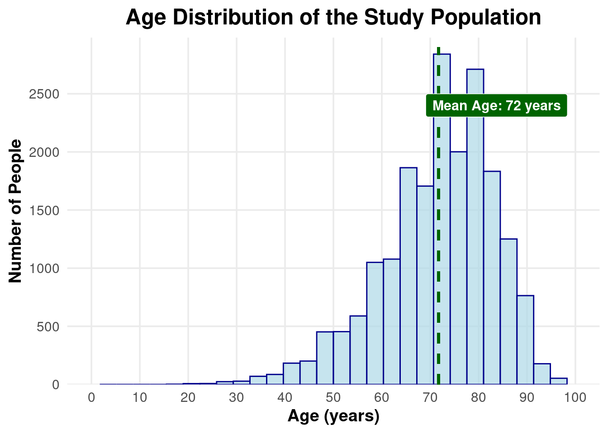
From the histogram distributed by age, it can be seen that the mean age of the study population is 72 years.
The stroke subtypes (STYPE) are here distributed by age and visualized with boxplots. Here’s a brief description of the different subtypes:
LACS (Lacunar Stroke Syndrome)
Blockage of small penetrating arteries in deep brain structures, such as the basal ganglia, thalamus, or internal capsule. The prognosis is genereally better than other subtypes; smaller infarct size, where infarct size refers to the portion of the brain that has suffered irreversible damage from a stroke due to insufficient oxygen and nutrients.
PACS (Partial Anterior Circulation Syndrome)
Partial occlusion in the anterior cerebral circulation, typically affecting the middle cerebral artery (MCA) or anterior cerebral artery (ACA). The prognosis is moderate; larger infarct than LACS, but less severe than e.g TACS.
POCS (Posterior Circulation Syndrome)
Infarction in the posterior cerebral circulation, affecting the brainstem, cerebellum, or occipital lobes. The prognosis is variable, depending on location and size of the infarction.
TACS (Total Anterior Circulation Syndrome)
Complete occlusion of the anterior cerebral circulation, typically affecting the middle cerebral artery (MCA) or internal carotid artery (ICA). The prognosis is poor; associated with large infarcts, severe disability, and high mortality rates.
OTH refers to other types of strokes.
p2 <- data |>
ggplot(aes(x = STYPE, y = AGE, fill = STYPE)) +
geom_boxplot(alpha = 0.7, outlier.shape = NA) + # Boxplot without outlier points
labs(
title = "Stroke Subtypes Distributed by Age",
x = "Stroke Type (STYPE)",
y = "Age (years)"
) +
theme_minimal(base_size = 14) +
theme(
plot.title = element_text(hjust = 0.5, face = "bold", size = 18),
axis.title.x = element_text(face = "bold", size = 14),
axis.title.y = element_text(face = "bold", size = 14),
legend.position = "right"
)
# Display the plot
print(p2)STYPE_median <- data |>
group_by(STYPE) |>
summarize(Median_AGE = round(median(AGE, na.rm = TRUE), 0))
print(STYPE_median)# A tibble: 5 × 2
STYPE Median_AGE
<chr> <dbl>
1 LACS 71
2 OTH 72
3 PACS 74
4 POCS 72
5 TACS 76The median age of the different stroke subtypes are shown, where the most severe subtype TACS with high mortality rates, has the highest median age of 76 years.
The study population has been divided into six data groups based on the dose of heparin (no, low, medium) and whether aspirin was located. Below is a summary of the number of patients in each test group:
# Summarize and count patients by data group
data_summary <- data |>
group_by(data_group) |>
count(name = "patient_count")
print(data_summary)# A tibble: 6 × 2
# Groups: data_group [6]
data_group patient_count
<chr> <int>
1 Asp(No)-Hep(No) 4860
2 Asp(No)-Hep(low) 2429
3 Asp(No)-Hep(med) 2426
4 Asp-Hep(No) 4858
5 Asp-Hep(low) 2432
6 Asp-Hep(med) 2430This section visualizes the predicted probability of death at six months (EXPD6) by gender. A boxplot is used to compare probabilities.
# Create boxplot for predicted probability of death by gender
p3 <- data |>
ggplot(aes(x = SEX, y = EXPD6, fill = SEX)) +
geom_boxplot(alpha = 0.7, color = "black") +
scale_fill_manual(values = c("darkred", "blue")) +
labs(
title = "Predicted Probability of Death at 6 Months",
x = "Gender",
y = "Predicted Probability (EXPD6)",
fill = "Gender"
) +
theme_minimal(base_size = 14) +
theme(
plot.title = element_text(hjust = 0.5, face = "bold", size = 15),
axis.title.x = element_text(face = "bold", size = 10),
axis.title.y = element_text(face = "bold", size = 10),
legend.position = "top"
) +
scale_y_continuous(
limits = c(0, 1),
expand = expansion(mult = c(0.05, 0.1))
)
# Display the plot
print(p3)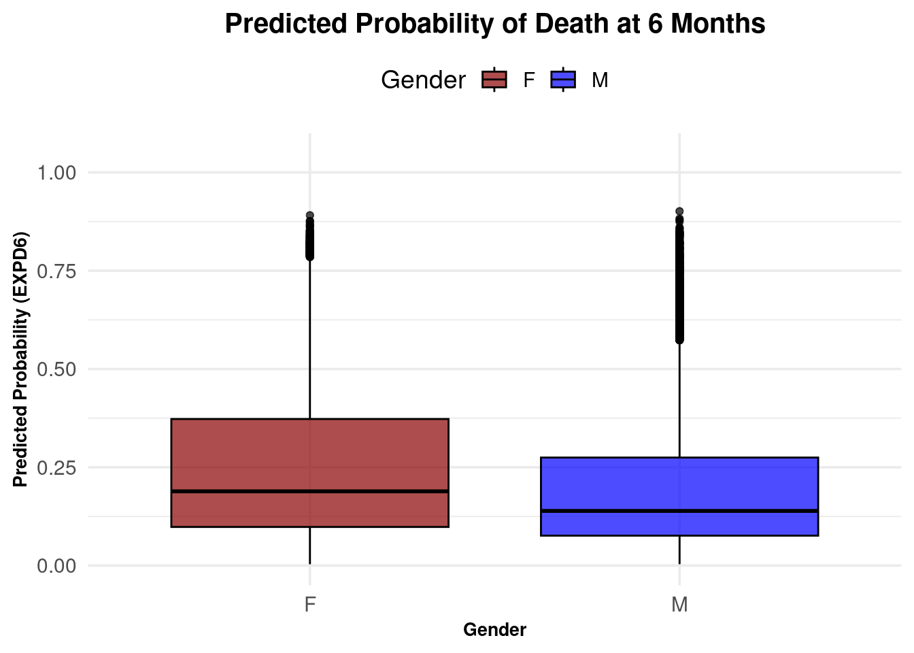
The following table summarizes the median predicted probability of death (EXPD6) by gender.
#Show median EXPD6 by gender
median_table <- data |>
group_by(SEX) |>
summarize(Median_EXPD6 = median(EXPD6, na.rm = TRUE))
print(median_table)# A tibble: 2 × 2
SEX Median_EXPD6
<chr> <dbl>
1 F 0.189
2 M 0.139From the table, females have a higher median probability of death at 6 months (0.1888) compared to males (0.1390).
# Save the plots as PNG files
ggsave(here("results/04_description_plot_1.png"), plot = p1, width = 8, height = 4, dpi = 300, bg = "white")Warning: Removed 2 rows containing missing values or values outside the scale range
(`geom_bar()`).ggsave(here("results/04_description_plot_2.png"), plot = p2, width = 8, height = 4, dpi = 300, bg = "white")
ggsave(here("results/04_description_plot_3.png"), plot = p3, width = 8, height = 4, dpi = 300, bg = "white")file.rename(here("R/04_describe.html"),here("results/04_describe.html"))[1] TRUE#|output: false
quarto::quarto_render(here("R/05_analysis_1.qmd"))[31m
processing file: 05_analysis_1.qmd
[39m1/37
2/37 [unnamed-chunk-1]
3/37
4/37 [unnamed-chunk-2]
5/37
6/37 [unnamed-chunk-3]
7/37
8/37 [unnamed-chunk-4]
9/37
10/37 [unnamed-chunk-5]
11/37
12/37 [unnamed-chunk-6]
13/37
14/37 [unnamed-chunk-7]
15/37
16/37 [unnamed-chunk-8]
17/37
18/37 [unnamed-chunk-9]
19/37
20/37 [unnamed-chunk-10]
21/37
22/37 [unnamed-chunk-11]
23/37
24/37 [unnamed-chunk-12]
25/37
26/37 [unnamed-chunk-13]
27/37
28/37 [unnamed-chunk-14]
29/37
30/37 [unnamed-chunk-15]
31/37
32/37 [unnamed-chunk-16]
33/37
34/37 [unnamed-chunk-17]
35/37
36/37 [unnamed-chunk-18]
37/37
[31moutput file: 05_analysis_1.knit.md
[39m[1mpandoc [22m
to: html
output-file: 05_analysis_1.html
standalone: true
section-divs: true
html-math-method: mathjax
wrap: none
default-image-extension: png
[1mmetadata[22m
document-css: false
link-citations: true
date-format: long
lang: en
title: 05_analysis_1
author: 'Group 29: Helena Møller, Emma Christensen, Frederik Holmstrup, Casper Harreby & Laura Christiansen'
Output created: 05_analysis_1.htmlWe want to investigate the apparent beneficial effect of the treatment by aspirin and heparin, divided into the different subgroups of the data. We will do that with inspiration from figure 2 in the original paper. The subgroups will be selected on the basis of the subgroups investigated in the original paper.
library("tidyverse")
library("here")The augmented data will be loaded, but further processing of the data will be needed.
data <- read_tsv(here("data/03_dat_aug.tsv"))We first want to investigate if there is a positive effect of treating stroke with heparin.
The data is preprocessed to have the groups which are also visible in figure 2 in the original paper, including dangerously high blood pressure, old age, the delay from stroke to randomization, if the patient were on aspirin before the study and other parameters. Some of the continious parameters are grouped into classes, e.g. the patient age. The heparin groups is augmented so that you either are in the heparin group or in the not heparin group - disregarding the Low or Medium dose. The outcome is grouped into dead/dependent, meaning that the patient is still hospitalized or dead after 6 months. The not recovered and recovered are grouped into an independent class as the ‘not recovered’ are still not hospitalized any more.
data_slim_heparin <- data |>
#One result heparin column is created, the low and medium doses of heparin are grouped together
mutate("Heparin" = case_when(
RXHEP == 'L' ~ 'Y',
RXHEP == 'M' ~ 'Y',
RXHEP == 'N' ~ 'N',
is.na(RXHEP) ~ NA)) |>
#The outcomes are grouped in dead/dependent and independent
mutate("Outcome" = case_when(
OCCODE == "dead" ~ "dead/dependent",
OCCODE == "dependent" ~ "dead/dependent",
OCCODE == "not recovered" ~ "independent",
OCCODE == "recovered" ~ "independent",
is.na(OCCODE) ~ NA
)) |>
#The delay from stroke to randomization is grouped into 0-8, 9-12, 13-24 or 25-48 hours
mutate("RDELAY_group" = case_when(
RDELAY <= 8 ~ "0-8h",
RDELAY <= 12 ~ "9-12h",
RDELAY <= 24 ~ "13-24h",
RDELAY <= 48 ~ "25-48h",
TRUE ~ NA)) |>
#The age is divided into 'old' (above 75 years) and young
mutate("AGE_group" = case_when(
AGE <= 75 ~ "≤75",
AGE > 75 ~ ">75"
)) |>
#The systolic blood pressure above 180 is subdivided into a group as this is defined as hypertensive crisis
mutate("RSBP_group" = case_when(
RSBP <= 180 ~ "≤180",
RSBP > 180 ~ ">180")) |>
#The expected death after 6 months is subdivded into 0-40%, 40-65%, 65-90% and 90-100%
mutate("EXPDD_group" = case_when(
EXPDD <= 0.4 ~ "0-40%",
EXPDD <= 0.65 ~ "40-65%",
EXPDD <= 0.90 ~ "65-90%",
EXPDD <= 1 ~ "90-100%")) |>
#Only the columns containing the subgroups interesting for this study is selected, as there are many other indicative columns of the study.
select(Heparin,Outcome,RXASP,RDELAY_group,SEX,AGE_group,RSLEEP,RCONSC,RATRIAL,RSBP_group,STYPE,RDEF3,RCT,RVISINF,DDIAG,RASP3,RHEP24,EXPDD_group)In the end we have nrow(data_slim_heparin) different datapoints, with information if the datapoint belong in ncol(data_slim_heparin)-2 different groups
The data is modified to have one dataframe for each subgroup nested together in the same dataframe, where the original dataframe has the noted group and subgroup. Thereby there is one dataframe indicating for the individuals with and without heparin, what the outcome is after 6 months, and all the subgroup calculations can be handled at once.
data_nested_heparin <- data_slim_heparin |>
#All the different data subgroups are joined together
pivot_longer(cols = -c(Heparin,Outcome),
names_to = "group",
values_to = "subgroup") |>
drop_na() |>
#The data is grouped by the different subgroups to count the amount of dead/dependent or independent for with and without heparin
group_by(Heparin,Outcome,group,subgroup) |>
count() |>
#The data is scaled to reflect pr 1000 patients
mutate(n = n/1000) |>
#The data is nested into each subgroup for further processing
group_by(group,subgroup) |>
nest() |>
ungroup()The actual number of dead/dependent is calculated. With this information, the expected number of dead/dependent and the variance of each subgroup is calculated.
data_statistics_heparin <- data_nested_heparin |>
mutate(data = map(.x = data,
.f = ~ .x |>
pivot_wider(
names_from = Outcome,
values_from = n))) |>
#The number of dead/dependent in each subgroup is calculated by summing the number of dead/dependent for both treatment and non-treatment, and divided by the total number of patients in this group
mutate(Total_dead = map_dbl(.x = data,
.f = ~sum(.x |> pull(`dead/dependent`))),
Total_patients = map_dbl(.x = data,
.f = ~sum(.x |> pull(`dead/dependent`))+sum(.x |> pull(independent))),
Dead_rate = Total_dead / Total_patients) |>
#The expected deaths are caluculated as the total rate of dead/dependent times the number of patients for treatment and non-treatment
mutate(data = map2(.x = data,
.y = Dead_rate,
.f = ~ .x |>
mutate(Expected_deaths = .y*(`dead/dependent`+independent)))) |>
#The difference in the number of expected patients dead/dependent for treatment or non-treatment
mutate(E = map_dbl(.x = data,
.f = ~ .x |>
select(Heparin,Expected_deaths) |>
pivot_wider(
names_from = Heparin,
values_from = Expected_deaths) |>
mutate(difference = Y - N) |>
pull(difference))) |>
#The difference in the number of patients dead/dependent for treatment or non-treatment
mutate(O = map_dbl(.x = data,
.f = ~ .x |>
select(Heparin,`dead/dependent`) |>
pivot_wider(
names_from = Heparin,
values_from = `dead/dependent`) |>
mutate(difference = Y - N) |>
pull(difference))) |>
#The variance in each subgroup is calculated
mutate(V = map_dbl(.x = data,
.f = ~ .x |>
summarise(var = var(c(independent,`dead/dependent`))) |>
pull(var)))After the individual calculations for each subgroup, the adjusted benefit of being on the treatment is calculated along with the confidence intervals. The statisitic k = 0.207 was calculated in the original paper, and is used to adjust for multiple testing. The adjusted benefit per 1000 is calculated as $ = k*(O-E)$ , and the standard deviation calculated as \(= k*\sqrt{V}\)
k <- 0.207
alpha <- 0.99
data_CI_heparin <- data_statistics_heparin |>
#Adjusted benefit pr 1000 and standard deviation is calculated
mutate(Ad_ben = k*(O-E),
std_dev = k*sqrt(V),
# 99% confidence intervals calculated
CI_lower = Ad_ben - qnorm((1-alpha)/2)*std_dev,
CI_upper = Ad_ben + qnorm((1-alpha)/2)*std_dev) |>
#Group names are made to include both the group and the subgroup
unite(group_name, c(group,subgroup))The group labels are created to actually explain which subgroup it is. As an example, DDIAG_DDIAGHA is changed to Final diagnosis: Haemorrhagic stroke, and RHEP24_Y is changed to Heparin within 24 hours prior to randomisation.
The groups are changed in format to factor to control in which order they are plotted in the final plot
data_CI_ordered_heparin <- data_CI_heparin |>
mutate(group_name = factor(group_name,
levels = c("EXPDD_group_90-100%","EXPDD_group_65-90%","EXPDD_group_40-65%","EXPDD_group_0-40%","DDIAG_DNOSTRK","DDIAG_DDIAGUN","DDIAG_DDIAGISC","DDIAG_DDIAGHA","RDEF3_Y","RDEF3_N","RSLEEP_Y","RSLEEP_N","RCONSC_U","RCONSC_F","RCONSC_D","RDELAY_group_25-48h","RDELAY_group_13-24h","RDELAY_group_9-12h","RDELAY_group_0-8h","STYPE_OTH","STYPE_TACS","STYPE_POCS","STYPE_PACS","STYPE_LACS","RATRIAL_Y","RATRIAL_N","RVISINF_Y","RVISINF_N","RCT_Y","RCT_N","RHEP24_Y","RHEP24_N","RASP3_Y","RASP3_N","RSBP_group_>180","RSBP_group_≤180","RXASP_Y","RXASP_N","SEX_M","SEX_F","AGE_group_≤75","AGE_group_>75"), ordered = TRUE))The plot is created. The adjusted benefit per 1000 patients for each subgroup is illustrated with the confidence intervals.
p1 <- data_CI_ordered_heparin |>
ggplot(aes(x = Ad_ben,
y = group_name,
xmin = CI_lower,
xmax = CI_upper))+
geom_point(aes(size = Total_patients),shape = 15)+
geom_errorbarh(color = "blue")+
geom_vline(xintercept = 0, color = "grey", linetype = 2)+
scale_y_discrete(labels = full_labels_heparin)+
scale_size_continuous(range = c(1,3))+
labs(title = "Heparin reduces the risk of death or dependence after 6 months \n for only a few subgroups",
x = "Reductions in odds of being dead or \n dependent at six months for \n aspirin versus no heparin",
size = "Group size \n (in 1000 patients)")+
theme_minimal()+
theme(axis.title.y = element_blank(),
legend.position = "bottom",
plot.title.position = "plot")+
annotate("label", x=-0.05, y="", label= "Heparin better") +
annotate("label", x = 0.05, y="", label = "Heparin worse")
p1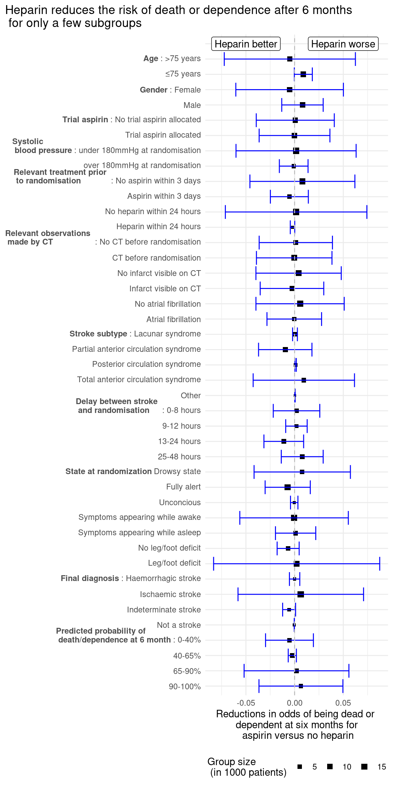
It can first and foremost be seen on the figure, that there are not a very high reduction of odds for all of the subgroups, where the reduction of odds are in scales 0.01, meaning that 10 for every 1000 person odds are improved. This can be seen for the stroke subtype: Partial anterior circulation syndrome, there the odds on average are improved for 10/1000 patients. For many subgroups the odds are worsened, as e.g. for the ‘young’ subgroup with ages below 75, there the odds are on average worsened for 10/1000 patients.
The data is preprocessed similarly to before, but has aspirin as the group divider instead of heparin. The outcome is still grouped into dead/dependent, meaning that the patient is still hospitalized or dead after 6 months. The not recovered and recovered are grouped into an independent class as the ‘not recovered’ are still not hospitalized any more.
data_slim_aspirin <- data |>
mutate("Aspirin" = RXASP) |>
#The outcomes are gruped in dead/dependent and independent
mutate("Outcome" = case_when(
OCCODE == "dead" ~ "dead/dependent",
OCCODE == "dependent" ~ "dead/dependent",
OCCODE == "not recovered" ~ "independent",
OCCODE == "recovered" ~ "independent",
is.na(OCCODE) ~ NA
)) |>
#The delay from stroke to randomization is grouped into 0-8, 9-12, 13-24 or 25-48 hours
mutate("RDELAY_group" = case_when(
RDELAY <= 8 ~ "0-8h",
RDELAY <= 12 ~ "9-12h",
RDELAY <= 24 ~ "13-24h",
RDELAY <= 48 ~ "25-48h",
TRUE ~ NA)) |>
mutate("AGE_group" = case_when(
AGE <= 75 ~ "≤75",
AGE > 75 ~ ">75"
)) |>
#The systolic blood pressure above 180 is subdivided into a group as this is defined as hypertensive crisis
mutate("RSBP_group" = case_when(
RSBP <= 180 ~ "≤180",
RSBP > 180 ~ ">180")) |>
#The expected death after 6 months is subdivded into 0-40%, 40-65%, 65-90% and 90-100%
mutate("EXPDD_group" = case_when(
EXPDD <= 0.4 ~ "0-40%",
EXPDD <= 0.65 ~ "40-65%",
EXPDD <= 0.90 ~ "65-90%",
EXPDD <= 1 ~ "90-100%")) |>
#Only the columns containing the subgroups interesting for this study is selected, as there are many other indicative columns of the study. Heparin is also selected as a subgroup study here
select(Aspirin,Outcome,RXHEP,RDELAY_group,SEX,AGE_group,RSLEEP,RCONSC,RATRIAL,RSBP_group,STYPE,RDEF3,RCT,RVISINF,DDIAG,RASP3,RHEP24,EXPDD_group)The data is once again modified to have a nested dataframe for each subgroup to be able to parallelize the calculations. The data is scaled to the unit pr 1000 patients.
data_nested_aspirin <- data_slim_aspirin |>
pivot_longer(cols = -c(Aspirin,Outcome), names_to = "group", values_to = "subgroup") |>
drop_na() |>
group_by(Aspirin,Outcome,group,subgroup) |>
count() |>
mutate(n = n/1000) |>
group_by(group,subgroup) |>
nest() |>
ungroup()The statistical calculations is calculated for aspirin as a grouping parameter.
data_statistics_aspirin <- data_nested_aspirin |>
mutate(data = map(.x = data,
.f = ~ .x |>
pivot_wider(
names_from = Outcome,
values_from = n))) |>
mutate(Total_dead = map_dbl(.x = data,
.f = ~sum(.x |> pull(`dead/dependent`))),
Total_patients = map_dbl(.x = data,
.f = ~sum(.x |> pull(`dead/dependent`))+sum(.x |> pull(independent))),
Dead_rate = Total_dead / Total_patients) |>
mutate(data = map2(.x = data,
.y = Dead_rate,
.f = ~ .x |>
mutate(Expected_deaths = .y*(`dead/dependent`+independent)))) |>
mutate(E = map_dbl(.x = data,
.f = ~ .x |>
select(Aspirin,Expected_deaths) |>
pivot_wider(
names_from = Aspirin,
values_from = Expected_deaths) |>
mutate(difference = Y - N) |>
pull(difference))) |>
mutate(O = map_dbl(.x = data,
.f = ~ .x |>
select(Aspirin,`dead/dependent`) |>
pivot_wider(
names_from = Aspirin,
values_from = `dead/dependent`) |>
mutate(difference = Y - N) |>
pull(difference))) |>
mutate(V = map_dbl(.x = data,
.f = ~ .x |>
summarise(var = var(c(independent,`dead/dependent`))) |>
pull(var)))The confidence intervals for the reduction in odds of being dead or dependent after six months are calculated
k <- 0.207
alpha <- 0.99
data_CI_aspirin <- data_statistics_aspirin |>
mutate(Ad_ben = k*(O-E),
std_dev = k*sqrt(V),
CI_lower = Ad_ben + qnorm((1-alpha)/2)*std_dev,
CI_upper = Ad_ben - qnorm((1-alpha)/2)*std_dev) |>
unite(group_name, c(group,subgroup))First the group labels are to make an interpretable plot. The group labels are factored to have a fixed order of the labels on the plot axis.
The plot is created to illustrate the confidence intervals of the adjusted benefit of the aspirin treatment
p2 <- data_CI_ordered_aspirin |>
ggplot(aes(x = Ad_ben,
y = group_name,
xmin = CI_lower,
xmax = CI_upper))+
geom_point(aes(size = Total_patients),shape = 15)+
geom_errorbarh(color = "blue")+
geom_vline(xintercept = 0, color = "grey", linetype = 2)+
scale_y_discrete(labels = full_labels_aspirin)+
scale_size_continuous(range = c(1,3))+
labs(title = "Aspirin reduces the risk of death or dependence after 6 months \n for only a few subgroups",
x = "Reductions in odds of being dead or \n dependent at six months for \n aspirin versus no aspirin",
size = "Group size \n (in 1000 patients)")+
theme_minimal()+
theme(axis.title.y = element_blank(),
legend.position = "bottom",
plot.title.position = "plot")+
annotate("label", x=-0.05, y="", label= "Aspirin better") +
annotate("label", x = 0.05, y="", label = "Aspirin worse")
p2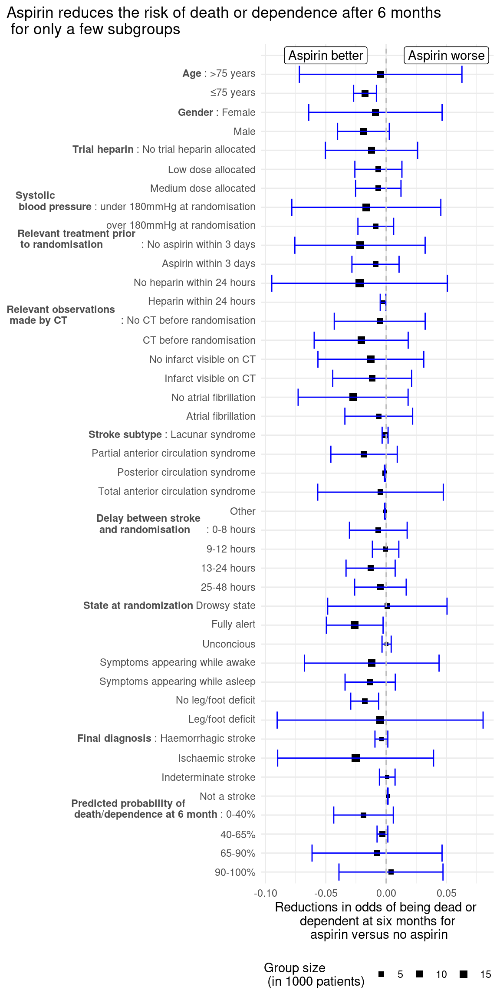
The same pattern is observed for aspirin, where there is not a large reduction in odds for any subgroup nor a large number of subgroups where there are an observed reduction in odds. Though, for the age of <75 years, there are actually a reduction in odds compared to the heparin trial, but e.g. it does not seem to matter if a patient which are experiencing atrial fibrillation gets aspirin treatment or not.
The results are saved as a png file
ggsave(filename = here("results/05_keyplot_2a.png"),
plot = p1,
dpi = 300,
bg = "white")Saving 7 x 5 in imageggsave(filename = here("results/05_keyplot_2b.png"),
plot = p2,
dpi = 300,
bg = "white")Saving 7 x 5 in imagefile.rename(here("R/05_analysis_1.html"),here("results/05_analysis_1.html"))[1] TRUE#|output: false
quarto::quarto_render(here("R/06_analysis_2.qmd"))[31m
processing file: 06_analysis_2.qmd
[39m1/25
2/25 [unnamed-chunk-1]
3/25
4/25 [unnamed-chunk-2]
5/25
6/25 [unnamed-chunk-3]
7/25
8/25 [unnamed-chunk-4]
9/25
10/25 [unnamed-chunk-5]
11/25
12/25 [unnamed-chunk-6]
13/25
14/25 [unnamed-chunk-7]
15/25
16/25 [unnamed-chunk-8]
17/25
18/25 [unnamed-chunk-9]
19/25
20/25 [unnamed-chunk-10]
21/25
22/25 [unnamed-chunk-11]
23/25
24/25 [unnamed-chunk-12]
25/25
[31moutput file: 06_analysis_2.knit.md
[39m[1mpandoc [22m
to: html
output-file: 06_analysis_2.html
standalone: true
section-divs: true
html-math-method: mathjax
wrap: none
default-image-extension: png
[1mmetadata[22m
document-css: false
link-citations: true
date-format: long
lang: en
title: 06_analysis_2
author: 'Group 29: Helena Møller, Emma Christensen, Frederik Holmstrup, Casper Harreby & Laura Christiansen'
Output created: 06_analysis_2.htmllibrary("tidyverse")
library("ggplot2")
library("dplyr")
library("readr")
library("here")# Load the dataset
data <- read_tsv(here("data/03_dat_aug.tsv"))Rows: 19435 Columns: 98
── Column specification ────────────────────────────────────────────────────────
Delimiter: "\t"
chr (69): RCONSC, SEX, RSLEEP, RATRIAL, RCT, RVISINF, RHEP24, RASP3, RDEF1, ...
dbl (28): USUBJID, RDELAY, AGE, RSBP, RYEAR, HOURLOCAL, MINLOCAL, DAYLOCAL, ...
lgl (1): DDEAD
ℹ Use `spec()` to retrieve the full column specification for this data.
ℹ Specify the column types or set `show_col_types = FALSE` to quiet this message.This analysis investigates whetherAGE can predict the following probabilities making a simple linear model for prediction of:
EXPDD (Predicted probability of death/dependence at 6 month)
EXPD6 (Predicted probability of death at 6 months)
EXPD14 (Predicted probability of death at 14 days)
We will visualize the relationships between AGE and these outcomes using scatter plots.
EXPDD with AGELinear regression:
# Linear regression for EXPDD
model_1 <- data |>
filter(STYPE == "LACS") |>
lm(data = _,
EXPDD ~ AGE)# Display model summary
model_1 |>
summary()
Call:
lm(formula = EXPDD ~ AGE, data = filter(data, STYPE == "LACS"))
Residuals:
Min 1Q Median 3Q Max
-0.14339 -0.04199 -0.00584 0.05201 0.43760
Coefficients:
Estimate Std. Error t value Pr(>|t|)
(Intercept) -3.151e-01 6.489e-03 -48.56 <2e-16 ***
AGE 1.125e-02 9.226e-05 121.93 <2e-16 ***
---
Signif. codes: 0 '***' 0.001 '**' 0.01 '*' 0.05 '.' 0.1 ' ' 1
Residual standard error: 0.07328 on 4655 degrees of freedom
Multiple R-squared: 0.7616, Adjusted R-squared: 0.7615
F-statistic: 1.487e+04 on 1 and 4655 DF, p-value: < 2.2e-16# Plot AGE vs log10(EXPDD) to observe the relationship
p1 <- data |>
filter(STYPE == "LACS") |>
ggplot(aes(x = AGE, y = log10(EXPDD))) +
geom_point(color = "purple") +
labs(
title = "AGE vs. Predicted Death/Dependence Probability at 6 Months",
x = "Age (Years)",
y = "log10(Predicted Death/Dependence Probability)",
caption = "Relationship modeled using simple linear regression"
) +
theme_minimal()
print(p1)
EXPD6 with AGELinear regression:
# Linear regression for EXPD6
model_2 <- data |>
filter(STYPE == "LACS") |>
lm(data = _,
log2(EXPD6) ~ AGE)Model summary:
# Display model summary
model_2 |>
summary()
Call:
lm(formula = log2(EXPD6) ~ AGE, data = filter(data, STYPE ==
"LACS"))
Residuals:
Min 1Q Median 3Q Max
-0.65386 -0.22350 0.00118 0.20142 0.93091
Coefficients:
Estimate Std. Error t value Pr(>|t|)
(Intercept) -9.0652887 0.0257476 -352.1 <2e-16 ***
AGE 0.0797957 0.0003661 218.0 <2e-16 ***
---
Signif. codes: 0 '***' 0.001 '**' 0.01 '*' 0.05 '.' 0.1 ' ' 1
Residual standard error: 0.2908 on 4655 degrees of freedom
Multiple R-squared: 0.9108, Adjusted R-squared: 0.9107
F-statistic: 4.751e+04 on 1 and 4655 DF, p-value: < 2.2e-16Visualization:
# Plot AGE vs log2(EXPD6) to observe the relationship
p2 <- data |>
filter(STYPE == "LACS") |>
ggplot(aes(x = AGE, y = log2(EXPD6))) +
geom_point(color = "blue") +
labs(
title = "AGE vs. Predicted Death Probability at 6 Months",
x = "Age (Years)",
y = "log2(Predicted Death Probability)",
caption = "Relationship modeled using simple linear regression"
) +
theme_minimal()
print(p2)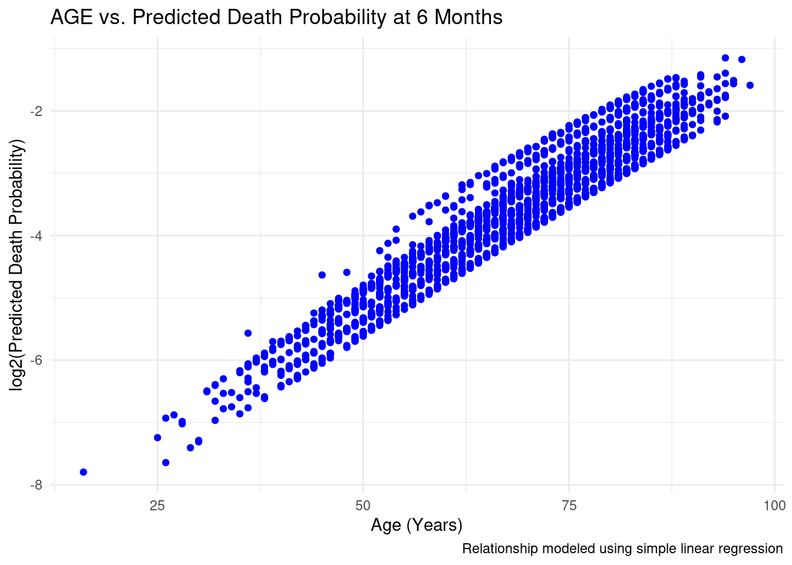
EXPD14 with AGELinear regression:
# Linear regression for EXPD14
model_3 <- data |>
filter(STYPE == "LACS") |>
lm(data = _, log2(EXPD14) ~ AGE)Model summary:
# Display model summary
model_3 |>
summary()
Call:
lm(formula = log2(EXPD14) ~ AGE, data = filter(data, STYPE ==
"LACS"))
Residuals:
Min 1Q Median 3Q Max
-0.49220 -0.27692 0.02947 0.20768 0.80010
Coefficients:
Estimate Std. Error t value Pr(>|t|)
(Intercept) -7.6640981 0.0263347 -291.03 <2e-16 ***
AGE 0.0366654 0.0003744 97.92 <2e-16 ***
---
Signif. codes: 0 '***' 0.001 '**' 0.01 '*' 0.05 '.' 0.1 ' ' 1
Residual standard error: 0.2974 on 4655 degrees of freedom
Multiple R-squared: 0.6732, Adjusted R-squared: 0.6731
F-statistic: 9588 on 1 and 4655 DF, p-value: < 2.2e-16Visualization:
# Plot AGE vs log2(EXPD14) to observe the relationship
p3 <- data |>
filter(STYPE == "LACS") |>
ggplot(aes(x = AGE, y = log2(EXPD14))) +
geom_point(color = "red") +
labs(
title = "AGE vs. Predicted Death Probability at 14 Days",
x = "Age (Years)",
y = "log2(Predicted Death Probability)",
caption = "Relationship modeled using simple linear regression"
) +
theme_minimal()
print(p3)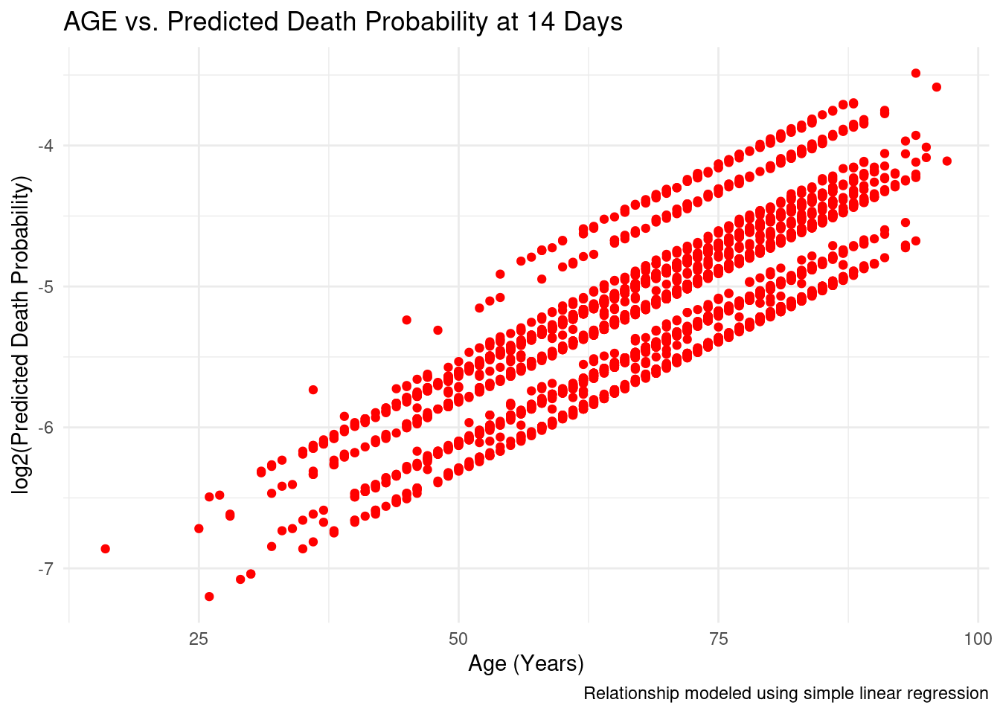
To document the results, the plots are saved in the results folder.
ggsave(filename = here("results/06_keyplot_2a.png"), plot = p1, width = 8, height = 4, dpi = 300, bg = "white")
ggsave(filename = here("results/06_keyplot_2b.png"), plot = p2, width = 8, height = 4, dpi = 300, bg = "white")
ggsave(filename = here("results/06_keyplot_2c.png"), plot = p3, width = 8, height = 4, dpi = 300, bg = "white")file.rename(here("R/06_analysis_2.html"),here("results/06_analysis_2.html"))[1] TRUE#|output: false
quarto::quarto_render(here("R/07_analysis_3.qmd"))[31m
processing file: 07_analysis_3.qmd
[39m1/11
2/11 [unnamed-chunk-1]
3/11
4/11 [unnamed-chunk-2]
5/11
6/11 [unnamed-chunk-3]
7/11
8/11 [unnamed-chunk-4]
9/11
10/11 [unnamed-chunk-5]
11/11
[31moutput file: 07_analysis_3.knit.md
[39m[1mpandoc [22m
to: html
output-file: 07_analysis_3.html
standalone: true
section-divs: true
html-math-method: mathjax
wrap: none
default-image-extension: png
[1mmetadata[22m
document-css: false
link-citations: true
date-format: long
lang: en
title: 07_analysis_3
author: 'Group 29: Helena Møller, Emma Christensen, Frederik Holmstrup, Casper Harreby & Laura Christiansen'
Output created: 07_analysis_3.htmlWe aim to visualize the overall time it takes before each person dies no matter the cause. The aim then is to plot the 6 different treatment combinations: aspirin or no aspirin and low, medium or no heparin for different causes of death for further analysis of which treatment works best.
library("tidyverse")
library("here")
library("scales")
Attaching package: 'scales'The following object is masked from 'package:purrr':
discardThe following object is masked from 'package:readr':
col_factorThe augmented data is loaded.
data <- read_tsv(here("data/03_dat_aug.tsv"))Prior to doing the analysis the augmented data is grouped by the cause of death, which are created into a new column having the different causes of death as values.
# Grouping the data by the variable "DEADC"
grouped_data <- data |>
group_by(DEADC) |>
# Creating a new column "TD_causes", which categorizes each cause of death based on "DEADC"
mutate(
TD_causes = case_when(
DEADC == 1 ~ "cause_1",
DEADC == 2 ~ "cause_2",
DEADC == 3 ~ "cause_3",
DEADC == 4 ~ "cause_4",
DEADC == 5 ~ "cause_5",
DEADC == 6 ~ "cause_6",
DEADC == 7 ~ "cause_7",
DEADC == 8 ~ "cause_8",
)
)
#Filter data for each cause of death
causes <- str_c("cause_", 1:8) #Creates a list of causes
group_data_list <- causes |>
set_names() |>
map(.x = ,
.f = ~ grouped_data |>
filter(TD_causes == .x)) # Filter the data for each cause and stores it in a listThe patients died pr. day are plotted for the first six months. It is noticed that most of the patients die within 20 days of randomization. This aim of this is to get an overall idea of how the treatment is working.
#Count the occurences of time of death for the whole dataset if the person is dead at the 6 month follow up
group_counts <- grouped_data |>
filter(FDEAD == "Y") |>
count(TD)
#Plots the time of death (TD) vs. the number of occurences.
p0 <- group_counts |>
ggplot(mapping = aes(x = TD,
y = n))+
geom_line()+
coord_cartesian(xlim = c(0, 180))+
labs(
title = "Most patients die within the first 20 days after randomisation",
x = "Days elapsed since randomisation",
y = "Number of people died x days after randomization")+
theme_minimal()+
theme(plot.title = element_text(hjust = 0.5))
#Display til plot
p0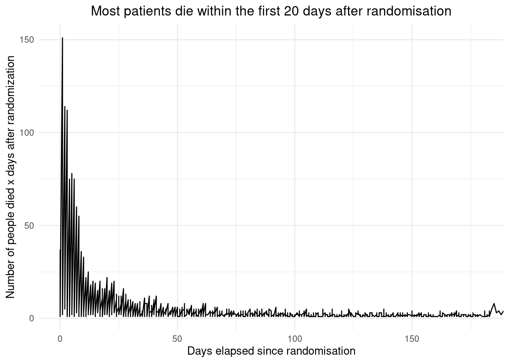
# Save the plot as a PNG
ggsave(filename = here("results/07_keyplot_3a.png"),
plot = p0,
width = 8,
height = 4,
dpi = 300,
bg = "white")For later comparison, the amount of patient dying of ischaemic stroke, and pulomonary embolism are pr day are plotted. It is included which of the 6 treatments the patients were having. The aim of this is to see which initial appears to work best.
#Count the occurences of "TD" for only those died of ischaemic stroke
group_1_counts <- group_data_list |>
pluck("cause_1") |>
group_by(data_group, TD) |>
summarise(count = n(), .groups = "drop")
#Plots the time of death (TD) vs. the number of occurences.
p1 <- group_1_counts |>
ggplot(mapping = aes(x = TD,
y = count,
color = data_group)) +
geom_line() +
labs(
title = "Days elapsed since randomisation before death of initial stroke",
x = "Days elapsed since randomisation",
y = "Number of peopled died of initial stroke after x days"
) +
facet_wrap(~ data_group)
# Save the plot as a PNG
ggsave(filename = here("results/07_keyplot_3b.png"),
plot = p1,
width = 8,
height = 4,
dpi = 300,
bg = "white")
#Display the plot
p1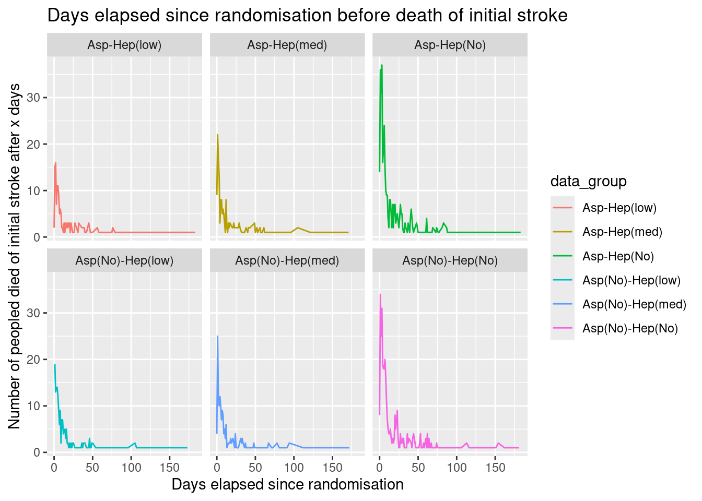
#Count the occurences of "TD" for only those died of pulmonary embolism
group_6_counts <- group_data_list |>
pluck("cause_6") |>
group_by(data_group, TD) |>
summarise(count = n(), .groups = "drop")
#Plots the time of death (TD) vs. the number of occurences.
p6 <- group_6_counts |>
ggplot(mapping = aes(x = TD,
y = count,
color = data_group)) +
geom_line() +
labs(
title = "Days elapsed since randomisation before death of pulmonary embolism",
x = "Days elapsed since randomisation",
y = "Number of peopled died of pulmonary embolism after x days"
) +
facet_wrap(~ data_group)
#Display til plot
p6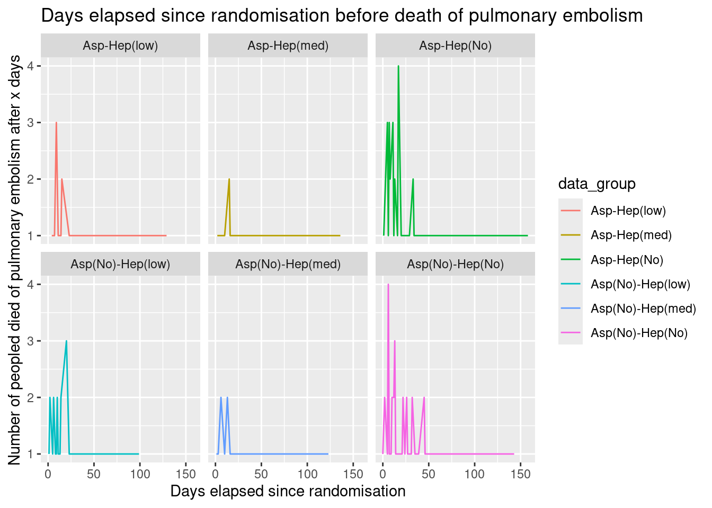
# Save the plot as a PNG
ggsave(filename = here("results/07_keyplot_3c.png"),
plot = p6,
width = 8,
height = 4,
dpi = 300,
bg = "white")file.rename(here("R/07_analysis_3.html"),here("results/07_analysis_3.html"))[1] TRUE#|output: false
quarto::quarto_render(here("R/08_analysis_4.qmd"))[31m
processing file: 08_analysis_4.qmd
[39m1/15
2/15 [unnamed-chunk-1]
3/15
4/15 [unnamed-chunk-2]
5/15
6/15 [unnamed-chunk-3]
7/15
8/15 [unnamed-chunk-4]
9/15
10/15 [unnamed-chunk-5]
11/15
12/15 [unnamed-chunk-6]
13/15
14/15 [unnamed-chunk-7]
15/15
[31moutput file: 08_analysis_4.knit.md
[39m[1mpandoc [22m
to: html
output-file: 08_analysis_4.html
standalone: true
section-divs: true
html-math-method: mathjax
wrap: none
default-image-extension: png
[1mmetadata[22m
document-css: false
link-citations: true
date-format: long
lang: en
title: 08_analysis_4
author: 'Group 29: Helena Møller, Emma Christensen, Frederik Holmstrup, Casper Harreby & Laura Christiansen'
Output created: 08_analysis_4.htmlExamining which effect combinations of treatments affects the probability of side events. The code can be used to create improved versions of figure 5A, 5B and 5D from the report that the data originates from. The effects are illustrated with bar plots.
library("tidyverse")
library("ggplot2")
library("dplyr")
library("readr")
library("here")Since several different effects will be examined, the code for creating the barplot is encoded in a function. First, a the data set is changed to contain only the rows investigated: dose op heparin, dose of heparin and whether the effect has been reported. Secondly, a new data set is created, calculating what percentage of patients are experiencing that effect. Thirdly, the plot is created: different heparin doses are on the x-axis, the treatment with aspirin is indicated by coloring and the y-axis is the percentage of patients with the effect reported.
bar_func <- function(group_title,data,colvar){
#Removing patients that do not fulfill the requirement for investigation
relevant_data <- data |>
select(RXHEP, RXASP, {{colvar}})
#Creating a data set with a column counting the percentage of patients with reported effect
percentage_data <- relevant_data |>
#Counts the patients in each group
group_by_all() |>
count() |>
#Creates the six groups examined
group_by(RXHEP, RXASP) |>
#Creates a row with percentages for use in plot
mutate(total_in_group = sum(n),
percentage = n / total_in_group * 100,
#Calculating standard deviations
p = n / total_in_group,
se = sqrt(p * (1 - p) / total_in_group) * 100) |>
filter({{colvar}} != "N")
#Create the order of doses of medicine, so they have the correct order in the plot
sorted_data <- percentage_data |>
mutate(RXHEP = factor(RXHEP, levels = c("M", "L", "N")),
RXASP = factor(RXASP, levels = c("Y", "N")))
#Defining the plot
plot_bar <- sorted_data |>
ggplot(mapping = aes(x = RXHEP, #Stratisfy on dose of heparin
y = percentage, #Expresses the chance of the event happening
fill = RXASP, #Color by the dose of aspirin
ymin = percentage - se, #Defines minimum for error bars
ymax = percentage + se)) + #Defines maximum for error bars
#Creates the columns - position_dodge-argument makes one column for each group
geom_col(position = position_dodge(preserve = "single"),
alpha = 0.7,
color = "black") +
#Creates text for data
geom_text(aes(label = round(percentage, 2),
y = percentage / 2),
#Makes text centered in bars and correct sizes
position = position_dodge(width = 0.9),
vjust = 0.5,
size = 4) +
#Adds errorbars
geom_errorbar(position = position_dodge(width = 0.9),
width = 0.3) +
#Create labels
labs(title = str_c("Percentage of patients with ", group_title),
x = NULL,
y = "%",
fill = "Aspirin Dosing") +
scale_fill_brewer(palette = "Dark2",
labels = c("Y" = "300 mg daily",
"N" = "No Aspirin")) +
theme_minimal() + #Chooses a design (removes grey background)
theme(legend.position = "bottom",
axis.title.y = element_text(angle = 0, vjust = 0.5), #Adjust y-axis tet
panel.grid.major.x = element_blank()) + #Adjusting horizontal lines
#Edits labels for the X-axis
scale_x_discrete(labels = c("M" = "12500 IU Heparin",
"L" = "5000 IU Heparin",
"N" = "No Heparin"))
#Defines final output of function to be the plot
return(plot_bar)
}data <- read_tsv(here("data/03_dat_aug.tsv"))Rows: 19435 Columns: 98
── Column specification ────────────────────────────────────────────────────────
Delimiter: "\t"
chr (69): RCONSC, SEX, RSLEEP, RATRIAL, RCT, RVISINF, RHEP24, RASP3, RDEF1, ...
dbl (28): USUBJID, RDELAY, AGE, RSBP, RYEAR, HOURLOCAL, MINLOCAL, DAYLOCAL, ...
lgl (1): DDEAD
ℹ Use `spec()` to retrieve the full column specification for this data.
ℹ Specify the column types or set `show_col_types = FALSE` to quiet this message.In the code below, a plot illustrating the percentage of patients in each group with cerebral bleed/heamorrhagic stroke within 14 days.
p1 <- bar_func("cerebral bleed/heamorrhagic stroke within 14 days",data,H14)
p1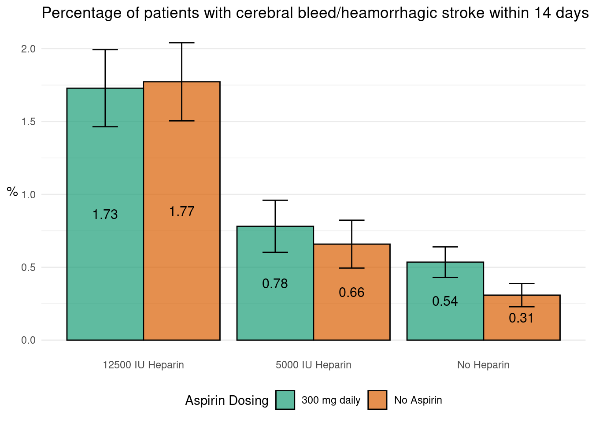
Here, the plot illustrates the percentage of patients in each group with major non-cerebral bleed within 14 days.
p2 <- bar_func("indicator of major non-cerebral bleed within 14 days",data,TRAN14)
p2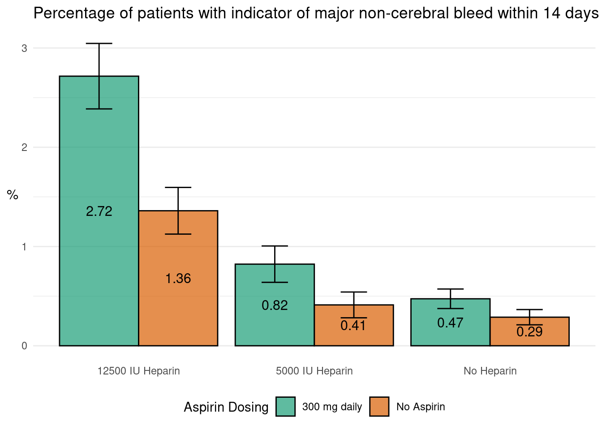
Finally, a plot illustrating the percentage of patients with reported pulmonary embolism within 14 days are created. This effect has a possibility of substantial under-reporting.
p3 <- bar_func("indicator of pulmonary embolism within 14 days",data,PE14)
p3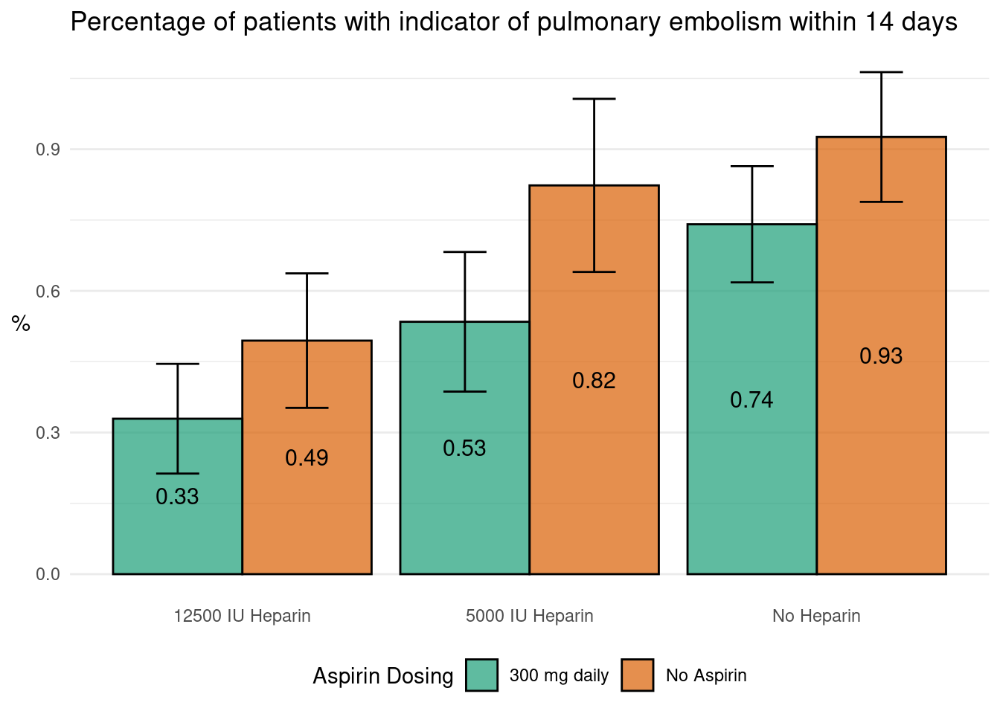
ggsave(filename = here("results/08_keyplot_4a.png"), plot = p1, width = 8, height = 4, dpi = 300, bg = "white")
ggsave(filename = here("results/08_keyplot_4b.png"), plot = p2, width = 8, height = 4, dpi = 300, bg = "white")
ggsave(filename = here("results/08_keyplot_4c.png"), plot = p3, width = 8, height = 4, dpi = 300, bg = "white")file.rename(here("R/08_analysis_4.html"),here("results/08_analysis_4.html"))[1] TRUE#|output: false
quarto::quarto_render(here("R/09_analysis_5.qmd"))[31m
processing file: 09_analysis_5.qmd
[39m1/21
2/21 [unnamed-chunk-1]
3/21
4/21 [unnamed-chunk-2]
5/21
6/21 [unnamed-chunk-3]
7/21
8/21 [unnamed-chunk-4]
9/21
10/21 [unnamed-chunk-5]
11/21
12/21 [unnamed-chunk-6]
13/21
14/21 [unnamed-chunk-7]
15/21
16/21 [unnamed-chunk-8]
17/21
18/21 [unnamed-chunk-9]
19/21
20/21 [unnamed-chunk-10]
21/21
[31moutput file: 09_analysis_5.knit.md
[39m[1mpandoc [22m
to: html
output-file: 09_analysis_5.html
standalone: true
section-divs: true
html-math-method: mathjax
wrap: none
default-image-extension: png
[1mmetadata[22m
document-css: false
link-citations: true
date-format: long
lang: en
title: 09_analysis_5
author: 'Group 29: Helena Møller, Emma Christensen, Frederik Holmstrup, Casper Harreby & Laura Christiansen'
Output created: 09_analysis_5.htmlWe aim to visualize if there is an overall effect of the 6 different treatment combinations: aspirin or no aspirin and low, medium or no heparin. The aim is to make a survival plot for the five different treatments and to make a chi-squared test to test if there is a signficiant difference in survival rates after 6 months.
library("tidyverse")
library("here")
library("survival")
library("RColorBrewer")
library("broom")The project functions are sourced, where a tidyverse-compatible chi-squared calculator function is available.
source(here("R/99_proj_func.R"))The augmented data is loaded.
data <- read_tsv(here("data/03_dat_aug.tsv"))Rows: 19435 Columns: 98
── Column specification ────────────────────────────────────────────────────────
Delimiter: "\t"
chr (69): RCONSC, SEX, RSLEEP, RATRIAL, RCT, RVISINF, RHEP24, RASP3, RDEF1, ...
dbl (28): USUBJID, RDELAY, AGE, RSBP, RYEAR, HOURLOCAL, MINLOCAL, DAYLOCAL, ...
lgl (1): DDEAD
ℹ Use `spec()` to retrieve the full column specification for this data.
ℹ Specify the column types or set `show_col_types = FALSE` to quiet this message.A Kaplan-Meier curve is a curve illustrating the overall survival rate for each group over time. For this plot we therefore need to augment the data to plot if a person is dead within the time period, and when the person died, and which treatment group the patient is within. We can thereby see if there is an overall difference in survival for the treatments over time.
#We first filter the data to contain the time of death, if the person is actually dead and the treatment groups of the subject
data_filtered <- data |>
select(TD,FDEAD,data_group) |>
mutate(FDEAD = recode(FDEAD, "Y" = 1, "N" = 0)) |>
#We only want to plot for 0-6 months, and therefore change all the time-of-deaths after 6 months to be censored at 6 months instead
mutate(TD = if_else(TD > 183, 183, TD))
#We filter all the individuals which we do not know of the person is dead or not, and count the amount of dead or not after 6 months
data_filtered_group <- data_filtered |>
select(data_group,FDEAD) |>
filter(!is.na(FDEAD)) |>
group_by(data_group,FDEAD) |>
count()A Chi-squared test is a statistical test to see of there is a significant difference in group sizes. The null-hypothesis would be that for all types of treatments, there is the same fraction of people which has died after 6 months. From the data created for the Kaplan-Meier curve, we therefore need to calculate the actual number of dead and not dead after 6 months.
#We create a contigency table with the different groups vs the status after 6 months
data_filtered_chisqr <- data_filtered_group |>
pivot_wider(names_from = data_group, values_from = n) |>
column_to_rownames(var = "FDEAD")
#We want to make a chisquare test of the difference between all groups. We therefore create a dataframe with two columns creating all different group combinations
group_combinations <- data_filtered |>
expand(data_group,data_group) |>
filter(data_group...1 != data_group...2)For creating a Kaplan-Meier curve, we want to calculate the number of patients alive for each timepoint, the number of patients that then dies at this timepoint, and the survival probability for reaching each timepoint. This can also be done from the command survfit from the survival package using the Surv object, where the syntax is Surv(time,event), where the event normally indicates 0 = alive and 1 = dead, as our FDEAD variable. The broom package can be used to extract the information from the survfit command to be used in ggplot.
#The survfit command using the Surv object is used
km_fit <- survfit(Surv(TD, FDEAD) ~ data_group, data = data_filtered)
#Tidy creates a variable time, estimate (the survival probability), as well as a confidence interval for the estimate. It also creates a variable called 'strata' indicating the data groups defined
km_tidy <- broom::tidy(km_fit)The chi squared test is performed on all the different group combinations, where the modified data for the chisquared test is used for the actual calculations
#The chisqr_pval is a function which calculates the chisquared p-value testing the null hypothesis that these two groups are not independent
chi_sqr_test <- group_combinations |>
mutate(chisqr_pval =
map2_dbl(.x = data_group...1,
.y = data_group...2,
.f = ~ chisqr_pval(data_filtered_chisqr, c(.x, .y))))The two different models, the Kaplan-Meier curve and the chisquared test is visualized for final evalutation
#The Kaplan-Meier curve is visualized by steps
p1 <- km_tidy|>
mutate(strata = str_remove(strata,"data_group=")) |>
ggplot(mapping = aes(x = time,
y = estimate,
color = strata)) +
geom_step(linewidth = 1) +
labs(
title = "Aspirin and low heparin have the higest effect on survival rate",
subtitle = "Only asprin and no heparin does also have a posive effect on survival rate \n compared to control",
x = "Time (days)",
y = "Probability of survival",
color = "Treatment group")+
scale_color_brewer(palette="Dark2")+
theme_minimal()
p1
p2 <- p1 +
geom_ribbon(aes(ymin = conf.low, ymax = conf.high),
alpha = 0.1, linetype = "dashed")+
labs(title = "There are no difference in the survival curves",
subtitle = "The curves for the different treatment regimes are, including the 95% confidence \n intervals, very similar")
p2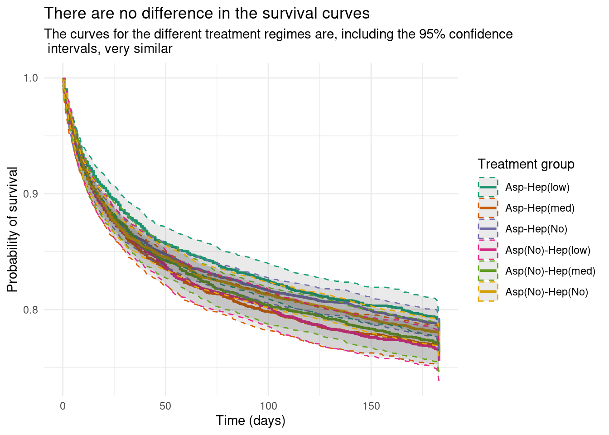
The chisquared test is visualized as a heatmap with a significance level of 5%.
p3 <- chi_sqr_test |>
ggplot(mapping = aes(x = data_group...1,
y = data_group...2,
fill = chisqr_pval))+
geom_tile()+
#The tiles is plotted with a gradient, which can be interpreted as green colors are below the significance level, purple levels are above the significance level
scale_fill_gradient2(
low = "#1B9E77",
mid = "white",
high = "#7570B3",
midpoint = 0.05,
limits = c(0, 1),
breaks = c(0.05, 1),
name = "p-value")+
labs(title = "There is only a significant differnce between two pairs of groups",
subtitle = "Asp-Hep(low) vs Asp(no)-Hep(low) | Asp-Hep(no) vs Asp(no)-Hep(low)")+
theme_classic()+
theme(axis.title = element_blank(),
axis.text.x = element_text(angle = 45, vjust = 1, hjust = 1),
panel.background = element_rect(fill = "lightgrey",
colour = "lightgrey"),
plot.title.position = "plot")
p3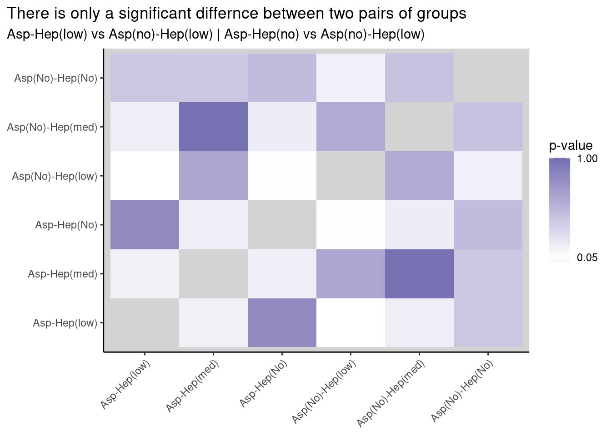
Comparing the results between the kaplan-meier curve and the chi-squared test, it can be concluded that the Asp-Hep(low) or Asp-Hep(no) has a significant higher probability of survival than the Asp(No)-Hep(low). Based on these results, it can therefore not be recommended to only put the patient on a low dose of heparin, where the odds of survival would be better to put the patient also on aspirin or both on aspirin and low dose of heparin. But putting a patient on a treatment is not significantly improving the survival rate compared to control group, why it cannot be concluded that one of the treatment regimes significantly increase survival rate.
ggsave(filename = here("results/09_keyplot_5aa.png"),
plot = p1,
width = 8,
height = 4,
dpi = 300,
bg = "white")
ggsave(filename = here("results/09_keyplot_5ab.png"),
plot = p2,
width = 8,
height = 4,
dpi = 300,
bg = "white")
ggsave(filename = here("results/09_keyplot_5b.png"),
plot = p3,
width = 8,
height = 4,
dpi = 300,
bg = "white") file.rename(here("R/09_analysis_5.html"),here("results/09_analysis_5.html"))[1] TRUE